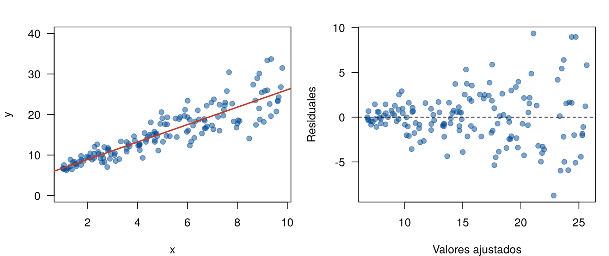
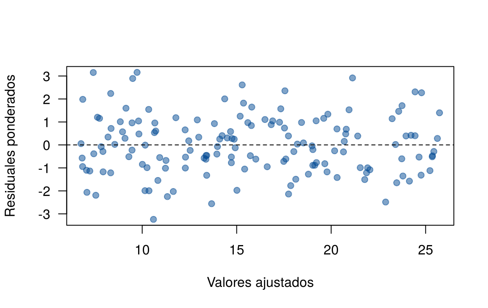

Cuando la varianza de los errores cambia con \(x\), la recta de mínimos cuadrados sigue siendo insesgada, pero sus errores estándar están mal y los intervalos de confianza no cubren lo que dicen (Supuestos del modelo). Transformar \(y\) es una solución (Transformaciones), pero cambia la escala de interpretación y no siempre funciona.
Esta página presenta dos soluciones que mantienen la escala original: los errores estándar robustos y los mínimos cuadrados ponderados. Primero se ven con datos simulados, donde se conoce la verdad, y luego con el caso de los países. Los bloques de código se ejecutan en orden.
| Opción | Qué hace | Ventaja | Limitación |
|---|---|---|---|
| Transformar \(y\) | Cambia la escala para que la varianza sea constante | Puede corregir también una curva | La interpretación cambia; volver a la escala original requiere cuidado |
| Errores estándar robustos | Deja la recta de MCO y corrige solo los errores estándar | Muy sencilla; no exige saber cómo cambia la varianza | La estimación no gana precisión; el intervalo de predicción no se corrige |
| Mínimos cuadrados ponderados (MCP) | Da menos peso a las observaciones con más varianza | Estimaciones más precisas e intervalos de predicción que cambian con \(x\) | Hay que estimar cómo cambia la varianza |
Se simulan 150 observaciones de un modelo con intercepto 5, pendiente 2 y una desviación estándar que crece con \(x\):
\[ y_i = 5 + 2 x_i + \varepsilon_i, \qquad \text{Desv. est.}(\varepsilon_i) = 0.5\, x_i \]
set.seed(2026)
n <- 150
x <- runif(n, 1, 10)
y <- 5 + 2 * x + rnorm(n, 0, 0.5 * x)
simulados <- data.frame(x, y)
mco <- lm(y ~ x, data = simulados)
round(summary(mco)$coefficients, 4) Estimate Std. Error t value Pr(>|t|)
(Intercept) 4.6179 0.5168 8.9361 0
x 2.1488 0.0909 23.6494 0par(mfrow = c(1, 2), mar = c(4, 4, 2, 1))
plot(y ~ x, data = simulados, pch = 19, col = "#034A9480", las = 1, ylim = c(0, 40))
abline(mco, col = "#C0392B", lwd = 2)
plot(fitted(mco), residuals(mco), pch = 19, col = "#034A9480", las = 1,
xlab = "Valores ajustados", ylab = "Residuales")
abline(h = 0, lty = 2)
Datos simulados con varianza creciente y sus residuales.
El embudo de los residuales muestra la varianza creciente.
El error estándar de summary() supone que todos los
errores tienen la misma varianza \(\sigma^2\). Los errores estándar
robustos (también llamados de White o “sándwich”) usan el
residual de cada observación para estimar su propia varianza. No cambian
la recta: solo su error estándar.
Se calculan con dos paquetes:
sandwich: calcula matrices de varianza robustas. La
función vcovHC() (heteroscedasticity-consistent)
con type = "HC3" es la versión recomendada para muestras
pequeñas y medianas.lmtest: la función coeftest() repite la
tabla de summary() con la matriz de varianza que se le
indique.Se instalan una sola vez con
install.packages(c("sandwich", "lmtest")).
library(sandwich)
library(lmtest)
coeftest(mco, vcov = vcovHC(mco, type = "HC3"))
t test of coefficients:
Estimate Std. Error t value Pr(>|t|)
(Intercept) 4.61791 0.40142 11.504 < 0.00000000000000022 ***
x 2.14885 0.10788 19.918 < 0.00000000000000022 ***
---
Signif. codes: 0 '***' 0.001 '**' 0.01 '*' 0.05 '.' 0.1 ' ' 1Las estimaciones son las mismas de summary(); los
errores estándar cambian. Para el intervalo de confianza robusto se usa
coefci(), también de lmtest:
coefci(mco, vcov = vcovHC(mco, type = "HC3")) 2.5 % 97.5 %
(Intercept) 3.824659 5.411153
x 1.935656 2.362036confint(mco) 2.5 % 97.5 %
(Intercept) 3.59670 5.639112
x 1.96929 2.328402Las observaciones con mucha varianza dan poca información sobre la recta: sus valores están muy dispersos. Los mínimos cuadrados ponderados (MCP) minimizan una suma de cuadrados en la que cada residual tiene un peso \(w_i\):
\[ \sum_{i=1}^{n} w_i \, (y_i - b_0 - b_1 x_i)^2, \qquad w_i = \frac{1}{\text{Var}(\varepsilon_i)} \]
Las observaciones con más varianza pesan menos. Si los pesos son correctos, los estimadores de MCP son los de menor varianza: es el teorema de Gauss-Markov aplicado a este caso.
Casi nunca se conocen las varianzas. Una forma usual de estimarlas tiene cuatro pasos (Montgomery, Peck y Vining, 2012, capítulo 5):
lm(..., weights = w).# Paso 2: la desviación estándar como función de x
aux <- lm(abs(residuals(mco)) ~ x, data = simulados)
s_hat <- fitted(aux)
range(s_hat) # deben ser todos positivos[1] 0.3342785 4.1104423# Paso 3: pesos
simulados$w <- 1 / s_hat^2
# Paso 4: modelo ponderado
mcp <- lm(y ~ x, data = simulados, weights = w)
round(summary(mcp)$coefficients, 4) Estimate Std. Error t value Pr(>|t|)
(Intercept) 4.5806 0.1786 25.6481 0
x 2.1590 0.0693 31.1411 0Si \(\hat{s}_i\) diera algún valor negativo o cero, los pesos no tendrían sentido. En ese caso se ajusta el paso 2 con otra forma, por ejemplo usando los valores ajustados de MCO en lugar de \(x\).
Para revisar el resultado se usan los residuales ponderados, \(\sqrt{w_i}\, e_i\), que deberían tener varianza constante:
plot(fitted(mcp), residuals(mcp) * sqrt(simulados$w), pch = 19, col = "#034A9480", las = 1,
xlab = "Valores ajustados", ylab = "Residuales ponderados")
abline(h = 0, lty = 2)
Residuales ponderados del modelo de mínimos cuadrados ponderados.
El embudo desapareció.
En una sola muestra no se puede saber. Con simulación sí: se repite el ejemplo 2 000 veces y se cuenta cuántas veces el intervalo del 95 % para la pendiente contiene el valor verdadero (2), y qué tan ancho es en promedio.
set.seed(2026)
resultados <- replicate(2000, {
y <- 5 + 2 * x + rnorm(n, 0, 0.5 * x)
m <- lm(y ~ x)
w <- 1 / fitted(lm(abs(residuals(m)) ~ x))^2
m_w <- lm(y ~ x, weights = w)
ic <- rbind(mco = confint(m)[2, ],
robusto = coefci(m, vcov = vcovHC(m, type = "HC3"))[2, ],
mcp = confint(m_w)[2, ])
c(cubre = ic[, 1] <= 2 & 2 <= ic[, 2], ancho = ic[, 2] - ic[, 1])
})
matrix(rowMeans(resultados), nrow = 3,
dimnames = list(c("MCO", "Robusto", "MCP"), c("Cobertura", "Ancho promedio"))) Cobertura Ancho promedio
MCO 0.9065 0.3552436
Robusto 0.9430 0.4081965
MCP 0.9370 0.2939553| Método | Cobertura | Ancho |
|---|---|---|
| MCO con errores estándar usuales | Menor que 95 %: el intervalo promete más de lo que da | Demasiado angosto |
| MCO con errores estándar robustos | Cercana a 95 % | Más ancho |
| MCP | Cercana a 95 % | El más angosto de los que cubren bien |
Los errores estándar robustos corrigen la cobertura. MCP además gana precisión, porque aprovecha mejor la información de las observaciones con poca varianza.
En la página Transformaciones, el modelo de la fecundidad según el logaritmo del PIB tenía varianza no constante. Se le aplican las dos soluciones:
Los datos se descargan aquí:
paises.csv. Guarde el archivo en
la carpeta data de su proyecto de
RStudio.
paises <- na.omit(read.csv("data/paises.csv"))
m1 <- lm(fertilidad ~ log(pib_pc), data = paises)
aux_p <- lm(abs(residuals(m1)) ~ log(pib_pc), data = paises)
range(fitted(aux_p))[1] 0.3082667 1.2446523paises$w <- 1 / fitted(aux_p)^2
m1_mcp <- lm(fertilidad ~ log(pib_pc), data = paises, weights = w)
rbind(MCO = summary(m1)$coefficients[2, 1:2],
Robusto = coeftest(m1, vcov = vcovHC(m1, type = "HC3"))[2, 1:2],
MCP = summary(m1_mcp)$coefficients[2, 1:2]) Estimate Std. Error
MCO -0.6200866 0.04244986
Robusto -0.6200866 0.04493515
MCP -0.4768560 0.03713834El error estándar robusto es un poco mayor que el usual, como se espera. Pero la pendiente de MCP es muy distinta de la de MCO: -0.48 frente a -0.62. Si el único problema fuera la varianza, las dos estimarían la misma pendiente y deberían parecerse.
Cuando MCO y MCP dan pendientes muy distintas, la causa suele ser que la media no es una recta. MCP da más peso a los países ricos, que tienen menos varianza, y allí la relación es más plana (es la curvatura que se vio en Transformaciones). Ponderar no arregla un modelo mal especificado para la media. Para estos datos, la solución es transformar la fecundidad o agregar un término cuadrático.
| Situación | Recomendación |
|---|---|
| Solo interesa la pendiente y su intervalo, y \(n\) no es muy pequeño | Errores estándar robustos |
| Interesa predecir, con intervalos que reflejen que la variación cambia con \(x\) | MCP |
| La relación también es curva | Transformar o modelar la curva primero |
| MCO y MCP dan pendientes muy distintas | Revisar el modelo para la media antes de seguir |
| Los datos son promedios de grupos de distinto tamaño \(n_i\) | MCP con pesos conocidos, \(w_i = n_i\) |
| Problema | Causa | Solución |
|---|---|---|
| Ponderar sin revisar la media | Se trata como un problema solo de varianza | Revisar primero la linealidad; comparar MCO y MCP |
| Revisar los residuales ordinarios del modelo ponderado | Esos residuales siguen teniendo varianza no constante | Usar los residuales ponderados, \(\sqrt{w_i}\,e_i\) |
| Usar pesos negativos o infinitos | El modelo auxiliar dio desviaciones negativas o cero | Revisar range(fitted(aux)) y cambiar la
forma del modelo auxiliar |
| Creer que los errores estándar robustos cambian la recta | Solo cambian la incertidumbre | La recta es la misma de MCO |
| Usar errores robustos con muy pocos datos | Son aproximaciones para \(n\) grande | Con pocos datos, preferir HC3 y ser prudente |
Simule 150 datos de \(y = 5 + 2x + \varepsilon\) con desviación estándar constante igual a 3. Compare los errores estándar usuales y los robustos. ¿Qué pasa?
set.seed(2026)
y_cte <- 5 + 2 * x + rnorm(n, 0, 3)
m_cte <- lm(y_cte ~ x)
c(usual = summary(m_cte)$coefficients[2, 2],
robusto = sqrt(vcovHC(m_cte, type = "HC3")[2, 2])) usual robusto
0.09773790 0.09951518 Son parecidos. Con varianza constante, los errores estándar robustos no cambian mucho la conclusión: usarlos por precaución tiene poco costo cuando \(n\) es grande.
Una empresa registra el tiempo promedio de atención de cada sucursal según su número de empleados. Las sucursales atendieron entre 10 y 500 clientes. ¿Qué pesos usaría en MCP y por qué?
Si el tiempo de cada cliente tiene varianza \(\sigma^2\), el promedio de una sucursal con \(n_i\) clientes tiene varianza \(\sigma^2/n_i\). El peso es \(w_i = n_i\): los promedios basados en más clientes son más precisos y deben pesar más. Aquí los pesos se conocen y no hay que estimarlos.
Ajuste el modelo log(fertilidad) ~ log(pib_pc) por MCO y
por MCP con los cuatro pasos. ¿Las pendientes se parecen más que en el
modelo sin logaritmo en la fecundidad?
m2 <- lm(log(fertilidad) ~ log(pib_pc), data = paises)
aux2 <- lm(abs(residuals(m2)) ~ log(pib_pc), data = paises)
paises$w2 <- 1 / fitted(aux2)^2
m2_mcp <- lm(log(fertilidad) ~ log(pib_pc), data = paises, weights = w2)
c(MCO = coef(m2)[2], MCP = coef(m2_mcp)[2])MCO.log(pib_pc) MCP.log(pib_pc)
-0.2071498 -0.1963145 Las pendientes se parecen más: el logaritmo de la fecundidad estabilizó la varianza, así que ponderar cambia poco. La diferencia que queda viene de la leve curvatura que aún tiene este modelo.
Última revisión: 9 de noviembre de 2026.